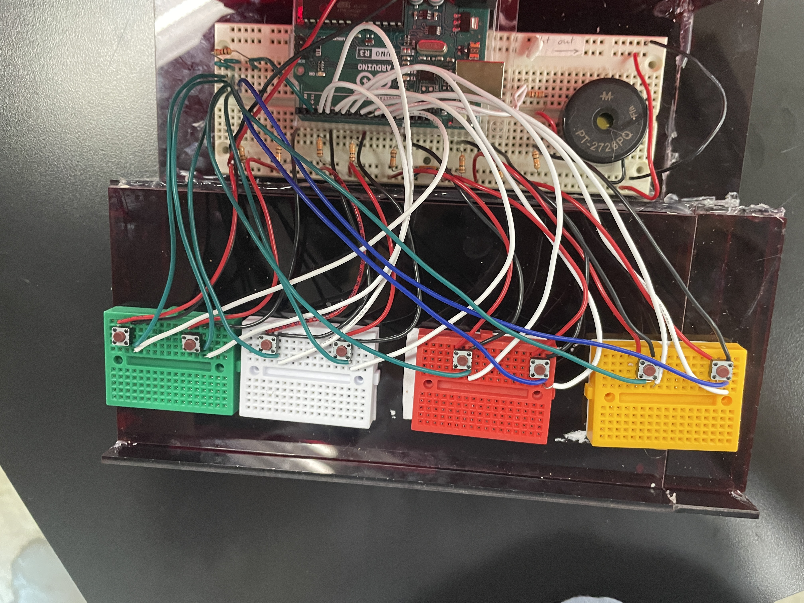

# Week 13: Final Project
[home](../index.html)
## Pressure operated musical instrument
A musical instrument built using buttons to interface with the user. They would be able to play chords and notes for varying durations. The instrument would also be able to change octaves and have a display to show the user what chord/note they are playing.
Here are some (very simple) illustrations of what I hope to create:
<img src="IMG_3274.jpeg" alt="overhead sketches" style="width:1373px;height:242px;">
##Project Plan:
It would utilize an Arduino and breadboarding, as well as code likely executed in the Arduino IDE (instead of matlab, as we've been using that method for coding in class). This project is basically a more complex version of a more rudimentary project I created last year that follows the same concept (a musical instrument operated based on the varied detection of light/heat from disparate sources).
Here is an image of the (very rudimentary) version I created for that project:

##Bill of Materials:
<table>
<tr>
<th>Part Name</th>
<th>Quantity</th>
<th>Use</th>
<th>Price</th>
</tr>
<tr>
<td>Printer Filament</td>
<td>TBD</td>
<td>Making the casing for the circuitry</td>
<td>Stocked in the lab</td>
</tr>
<tr>
<td>Buttons</td>
<td>26</td>
<td>To serve as the input and for the octave changer</td>
<td>$4.99 for 20 buttons | [link](https://www.amazon.com/Momentary-Tactile-Through-Breadboard-Friendly/dp/B07WF76VHT/ref=asc_df_B07WF76VHT/?tag=hyprod-20&linkCode=df0&hvadid=385639465088&hvpos=&hvnetw=g&hvrand=7725454326539758219&hvpone=&hvptwo=&hvqmt=&hvdev=c&hvdvcmdl=&hvlocint=&hvlocphy=1018092&hvtargid=pla-840596479145&psc=1&tag=&ref=&adgrpid=79419940980&hvpone=&hvptwo=&hvadid=385639465088&hvpos=&hvnetw=g&hvrand=7725454326539758219&hvqmt=&hvdev=c&hvdvcmdl=&hvlocint=&hvlocphy=1018092&hvtargid=pla-840596479145)</td>
</tr>
<tr>
<td>Wires</td>
<td>TBD</td>
<td>Creating the ciruit</td>
<td>Stocked in the lab</td>
</tr>
<tr>
<td>Resistors</td>
<td>TBD</td>
<td>Creating the ciruit</td>
<td>Stocked in the lab</td>
</tr>
<tr>
<td>Breadboard</td>
<td>1</td>
<td>Creating the ciruit</td>
<td>Stocked in the lab</td>
</tr>
<tr>
<td>7 Segment Displays</td>
<td>2</td>
<td>isplaying the note/chord played </td>
<td>$14.99 for 5, all in different colours | [link](https://www.amazon.com/diymore-Display-Digital-Decimal-Segment/dp/B07MCGDST2/ref=sr_1_1_sspa?crid=3SQ3Q8LS0WGKA&keywords=7+segment+display&qid=1657158084&s=industrial&sprefix=7+segmen%2Cindustrial%2C292&sr=1-1-spons&psc=1&spLa=ZW5jcnlwdGVkUXVhbGlmaWVyPUEyUjhCWFk1TjNGMTQ0JmVuY3J5cHRlZElkPUEwNTE2NzQxMjJBVFQzNThYTEozUiZlbmNyeXB0ZWRBZElkPUEwNTg2MTY1MkNKQzBROVhBWDlEVSZ3aWRnZXROYW1lPXNwX2F0ZiZhY3Rpb249Y2xpY2tSZWRpcmVjdCZkb05vdExvZ0NsaWNrPXRydWU=)</td>
</tr>
<tr>
<td>Piezo Buzzer</td>
<td>1</td>
<td>Playing the noise</td>
<td>$6.98 for 1 | [link](https://www.amazon.com/GBSTORE-9-15V-Active-Electronic-Buzzer/dp/B01JU3SK1I/ref=sr_1_2?crid=1E2M40LHJ5JXI&keywords=piezo+buzzer&qid=1657158187&s=industrial&sprefix=piezo+buzzer%2Cindustrial%2C53&sr=1-2)</td>
</tr>
</table>
##Timeline:
- Create CAD designs (July 10th)
- Assemble smaller versions of the circuit and write sections of code for proof of concept
- make use of existing pressure sensor code and modify it, also begin with the small breadboard before scaling up
- Write overall psuedocode, draw circuit diagram
- Conbine into one large circuit, test it.
- Write the code for the program, utilizing classes for the pressure sensors and integrating the piezo buzzer/speaker I choose
- Prototype the casing
- Print the casing and different covers for the buttons
- Assemble it all
- Prepare for final presentations at the project fair!
##CAD Designs:
*Note that these are preliminary and will require tweaking throughout the process of construction -- they are now out of date, see the updated ones at the end of this page and the ones on the other [final project page](file:///Users/Abi/Documents/GitHub/PHYS-S-12/Final_Project/index.html).
Here are the links to the models, as well as screenshots of them:
[Main Casing, with hole for octave changer button](https://a360.co/3O63rS0) <br/>
[Key Component](https://a360.co/3ySWgYS)<br/>
[7 Segment Display Casing (will be attached to the overall casing)](https://a360.co/3bY1eKJ)
# Creation of the Project:
*I had to significantly adjust the plan because some aspects of it were not feasible - for instance, I removed the seven segment display and octave changer button.
## Process of Construction:
Here are images of the iterations of the piano thus far:
1. One pin used for output, and there are multiple breadboard all lying in the same plane.
<img src="IMG_6162.jpeg" alt="circuit1pic" style="width:301.1px;height:402.1px;">
2. 2 pins for output (so it can play multiple notes at once), and the breadboards are stacked to fit dimensions of container
<img src="IMG_6300.jpeg" alt="circuit2pic" style="width:301.4px;height:401.9px;">
3. I laser cut the body of the piano and assembled it using clay so I can assemble and dissasemble it at will. There are mini breadboards for the buttons, and a large one for the associated wiring. It still has the two output pins to allow for the playing of two notes at once.
<img src="IMG_6313-1.jpeg" alt="circuit3pic" style="width:301.2px;height:401.9px;">
4. I laser cut the acrylic and cardboard components of thekeys and attached them to the rest of the piano using hot glue. The keys and overhang are attached to the body of the piano with hinges to allow easy access to the wiring.
<img src="IMG_6321.jpeg" alt="circuit4pic" style="width:301.8px;height:401.5px;">
5. I experimented with code interrupts, and followed various tutorials but sadly none of them succeded. Since there are only two interrupt pins on the arduino uno, I had to wire multiple buttons to one pin. To facilitate this I had to create a connection between all of the buttons. This scrambled the signals and made the program think that multiple buttons were being pressed constantly, and as a result played a jumble of notes instead of the ones I intended. This issue was a common thread linking all the tutorials, but nonetheless I tried three before deciding against the interrupts. Here is an image of the changes I made to the circuit, even though I had to undo them.

6. I undid the interrupts, but was still suffering with a wide variety of bugs resulting from trying to play two notes at once. So, I decided to avoid all of these by seeing if using eight different buzzers (one for each note) would solve my issues. However, even after I modified the code and triple-checked the wiring, the buzzers would not cooperate. Three of the eight worked, but the other five didn't elicit any response from their corresponding buzzer. So after experimenting and trying to debug even more failed, I changed everything back to how it was before and resolved to debug that code. Here is an image of the wiring I made for this, even though it didn't work:
<img src="IMG_6397.jpeg" alt="8buzzers" style="width:300.8px;height:403px;">
7. I reversed it and finalized the wiring- here is what the final product looks like:
<img src="IMG_6336.jpeg" alt="circuit4pic" style="width:401.6px;height:300.5px;">
<video width="405" height="228.5" controls>
<source src="8212fd3c-ae5e-4082-a6e9-6dd927d3b124-0-e79af379-d0a5-48cb-8328-cc192ff02cfa.mp4" type="video/mp4">
</video>
## Code:
[Failed Iterations](./indexcopy.html)
<pre><code class="language-arduino">
// Author: Abi Adam
class Button {
// Class Member Variables
// These are initialized at startup
int buttonPin; // the number of the pin
long frequency; // the frequency
int playTime; // the amount of time the buzzer will play after the button is pressed
// These maintain the current state
int buzzerState; // buzzerState used to set the buzzer
// Constructor - creates a Button and initializes the member variables and state
public:
Button(int pin, long freq, int time_){
buttonPin = pin;
pinMode(buttonPin, INPUT);
frequency = freq;
playTime = time_;
buzzerState = LOW;
}
///////////////////////////////////////////////////////////////////////////////////////////////////
void playNoise(int buttonPin, int buzzerPin, int frequency, int playTime){
int buttonState = 0;
buttonState = digitalRead(buttonPin); // read new state
if (buttonState == HIGH) {
Serial.println("The button is being pressed");
myTone(buzzerPin, frequency, playTime); // turn on
}
else
if (buttonState == LOW) {
Serial.println("The button is unpressed");
myTone(buzzerPin, 0, 5); // turn off
}
}
///////////////////////////////////////////////////////////////////////////////////////////////////
void myTone(int pin, int frequency, int duration){
int startTime = millis();
int period = 1000000/frequency;
while ((millis() - startTime) < duration){
digitalWrite(pin, HIGH);
delayMicroseconds(period/2);
digitalWrite(pin, LOW); //reversed high and low in this while-- change back if this causes problems
delayMicroseconds(period/2);
}
}
}; //end of Button class
///////////////////////////////////////////////////////////////////////////////////////////////////
void playChord(int chordN1, int chordN2){
while (digitalRead(chordN1) == HIGH && digitalRead(chordN2) == HIGH){
Serial.println("Playing note 1!");
Serial.println(chordN1);
if (chordN1 == 1){ analogWrite(10, 262); }
else if (chordN1 == 2){ analogWrite(10, 294); } //CHANGED FROM 3
else if (chordN1 == 3){ analogWrite(10, 330); }
else if (chordN1 == 4){ analogWrite(10, 349); }
else if (chordN1 == 5){ analogWrite(10, 392); }
else if (chordN2 == 6){ analogWrite(12, 440); }
else if (chordN1 == 6){ analogWrite(10, 493); }
else if (chordN1 == 8){ analogWrite(10, 523); }
Serial.println("Playing note 2!");
Serial.println(chordN2);
if (chordN2 == 1){ tone(12, 262); }
else if (chordN2 == 2){ tone(12, 294); } //CHANGED FROM 3
else if (chordN2 == 3){ tone(12, 330); }
else if (chordN2 == 4){ tone(12, 349); }
else if (chordN2 == 5){ tone(12, 392); }
else if (chordN2 == 6){ tone(12, 440); }
else if (chordN2 == 7){ tone(12, 493); }
else if (chordN2 == 8){ tone(12, 523); }
if (digitalRead(chordN1) == LOW) {
tone(10, 0, 5); // turn off
}
if (digitalRead(chordN2) == LOW) {
tone(12, 0, 5); // turn off
}
} // end of while
} // end of chord
///////////////////////////////////////////////////////////////////////////////////////////////////
int buzzerPin = 10;
int buzzerPin2 = 12;
int buttonState = 0;
Button button1(13, 262, 500);
Button button2(2, 294, 500); //CHANGED FROM 3
Button button3(4, 330, 500);
Button button4(5, 349, 500);
Button button5(6, 392, 500);
Button button6(7, 440, 500);
Button button7(8, 493, 500);
Button button8(9, 523, 500);
void setup() {
Serial.begin(9600); // initialize serial
pinMode(buzzerPin, OUTPUT); // set arduino pin to output mode
pinMode(buzzerPin2, OUTPUT);
}
void loop() {
button1.playNoise(13, 10, 262, 500);
button2.playNoise(2, 10, 294, 500); //CHANGED FROM 3
button3.playNoise(4, 10, 330, 500);
button4.playNoise(5, 10, 349, 500);
button5.playNoise(6, 10, 392, 500);
button6.playNoise(7, 10, 440, 500);
button7.playNoise(8, 10, 493, 500);
button8.playNoise(9, 10, 523, 500);
//Playing 2 Notes at Once:
int chordN1;
int chordN2;
int pushed [8]; //create an array to read each of the buttons
pushed[0] = digitalRead(13);
pushed[1] = digitalRead(2);
pushed[2] = digitalRead(4);
pushed[3] = digitalRead(5);
pushed[4] = digitalRead(6);
pushed[5] = digitalRead(7);
pushed[6] = digitalRead(8);
pushed[7] = digitalRead(9);
for (int i = 1; i<=9; i++){ //will go through and read the arrays values
int pushedState = digitalRead(pushed[i]); //will read read every value in the array, and store it in a variable i
for (int j = 1; j <=9; j++){
int compareState = digitalRead(pushed[j]); //will also read every value in the array, and store it in a new variable, j
if (pushedState == HIGH && compareState == HIGH && j != i){
Serial.println("Two buttons pressed");
//if there are 2 buttons pressed
chordN1 = i;
chordN2 = j;
Serial.println(i);
Serial.println(j);
playChord(chordN1, chordN2); }
} // end of for 2
}// end of for 1
}//end of void loop
</code></pre>
## Files and Relevant Tutorials:
Laser Cutting File: </br>
[DXF File](https://a360.co/3PApYHY).
</br>
[DXF Addition File (to correct mistakes in the first cut)](https://a360.co/3oyetF5).
Playing Two Notes at Once: </br>
[Arduino Tutorial](https://arduino.stackexchange.com/questions/32926/multiple-tones-with-one-piezo-buzzer).